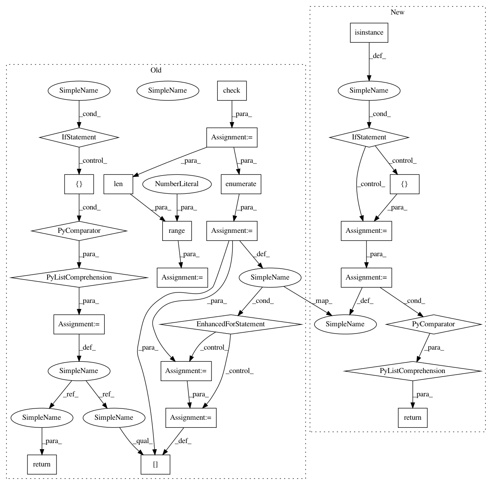

2bb8e1dfeadfef943c888f7e4e735fd161535475,gensim/sklearn_api/text2bow.py,Text2BowTransformer,transform,#Text2BowTransformer#Any#,41
Before Change
// input as python lists
check = lambda x: [x] if isinstance(x, string_types) else x
docs = check(docs)
tokenized_docs = [list(self.tokenizer(x)) for x in docs]
X = [[] for _ in range(0, len(tokenized_docs))]
for k, v in enumerate(tokenized_docs):
bow_val = self.gensim_model.doc2bow(v)
X[k] = bow_val
return X
def partial_fit(self, X):
if self.gensim_model is None:
self.gensim_model = Dictionary(prune_at=self.prune_at)
After Change
)
// input as python lists
if isinstance(docs, string_types):
docs = [docs]
tokenized_docs = (list(self.tokenizer(doc)) for doc in docs)
return [self.gensim_model.doc2bow(doc) for doc in tokenized_docs]
def partial_fit(self, X):
if self.gensim_model is None:
self.gensim_model = Dictionary(prune_at=self.prune_at)
In pattern: SUPERPATTERN
Frequency: 3
Non-data size: 25
Instances
Project Name: RaRe-Technologies/gensim
Commit Name: 2bb8e1dfeadfef943c888f7e4e735fd161535475
Time: 2017-11-06
Author: horpto@users.noreply.github.com
File Name: gensim/sklearn_api/text2bow.py
Class Name: Text2BowTransformer
Method Name: transform
Project Name: RaRe-Technologies/gensim
Commit Name: 2bb8e1dfeadfef943c888f7e4e735fd161535475
Time: 2017-11-06
Author: horpto@users.noreply.github.com
File Name: gensim/sklearn_api/text2bow.py
Class Name: Text2BowTransformer
Method Name: transform
Project Name: RaRe-Technologies/gensim
Commit Name: 2bb8e1dfeadfef943c888f7e4e735fd161535475
Time: 2017-11-06
Author: horpto@users.noreply.github.com
File Name: gensim/sklearn_api/phrases.py
Class Name: PhrasesTransformer
Method Name: transform
Project Name: RaRe-Technologies/gensim
Commit Name: 2bb8e1dfeadfef943c888f7e4e735fd161535475
Time: 2017-11-06
Author: horpto@users.noreply.github.com
File Name: gensim/sklearn_api/tfidf.py
Class Name: TfIdfTransformer
Method Name: transform